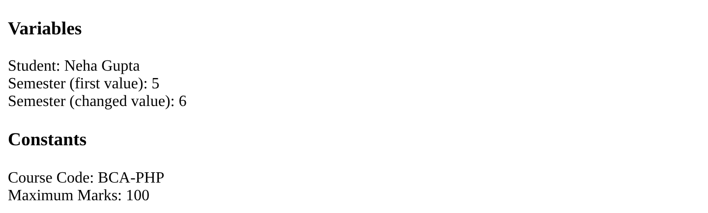

Write a PHP code demonstrating variables and constants.
Program 2.2: Demonstrating Variables and Constants
Concepts used
Variable assignment and reassignment, string interpolation, the constants created with const and define(), the dot operator.
Test data: Student: Neha Gupta; semester first stored as 5 and then changed to 6; course code BCA-PHP; maximum marks 100.
Logic
- Define two constants, one with const and one with
define(). - Store the student's name and semester in variables.
- Display the semester, change it, and display it again.
- Display the constants.
Code
<?phpconst MAX_MARKS = 100; // constant created with constdefine("COURSE_CODE", "BCA-PHP"); // constant created with define() $studentName = "Neha Gupta"; // variable holding text$semester = 5; // variable holding a number?><!DOCTYPE html><html lang="en"><head> <meta charset="UTF-8"> <title>Variables and Constants</title></head><body> <?php echo "<h3>Variables</h3>"; echo "Student: $studentName<br>"; echo "Semester (first value): $semester<br>"; $semester = 6; // a variable can be given a new value echo "Semester (changed value): $semester<br>"; echo "<h3>Constants</h3>"; echo "Course Code: " . COURSE_CODE . "<br>"; echo "Maximum Marks: " . MAX_MARKS; ?></body></html>
Output
These are real screenshots, taken by running the program with the test data.

Understanding the output
The two semester lines show that one variable held 5 and then 6, so the value of a variable can change while the program runs. The course code and maximum marks are printed exactly as defined. If a statement such as MAX_MARKS = 90; were added, the script would stop with a parse error, because a constant cannot be given a new value.
How it works
The first PHP block defines the constant MAX_MARKS with const and the constant COURSE_CODE with define(). It then creates two variables: $studentName, holding the text "Neha Gupta", and $semester, holding the number 5. This block produces no output.
In the second block, the variables are printed through interpolation inside double-quoted strings. The statement $semester = 6; then replaces the old value, and the next echo prints the new value. The constants are joined to their labels with the dot operator, because a constant is not replaced inside a string.
Run it yourself
Real PHP 8.3 runs inside your browser (nothing is sent to a server). Forms, links, cookies and sessions work as they do in XAMPP. The first run downloads PHP, so it needs internet and takes a few seconds.
Try this:
- Change the semester values and run again.
- Add the line
MAX_MARKS = 90;after the constants and run it. Read the error: a constant cannot be changed.
Running it in XAMPP
Save the file in C:\xampp\htdocs\phpbook\ch02 and open http://localhost/phpbook/ch02/variables-constants.php.
Common mistakes
- Writing
$COURSE_CODEfor a constant; the dollar sign makes PHP look for a variable that does not exist. - Placing a constant inside double quotation marks, as in "Code: COURSE_CODE", which prints the name instead of the value.
- Using a variable before assigning a value to it, which produces the warning Undefined variable.
- Writing
$studentnamein one place and$studentNamein another; the two names refer to different variables.
Viva questions
Difference between a variable and a constant?
How are constants defined in PHP?
define("NAME", value) or with the const keyword.